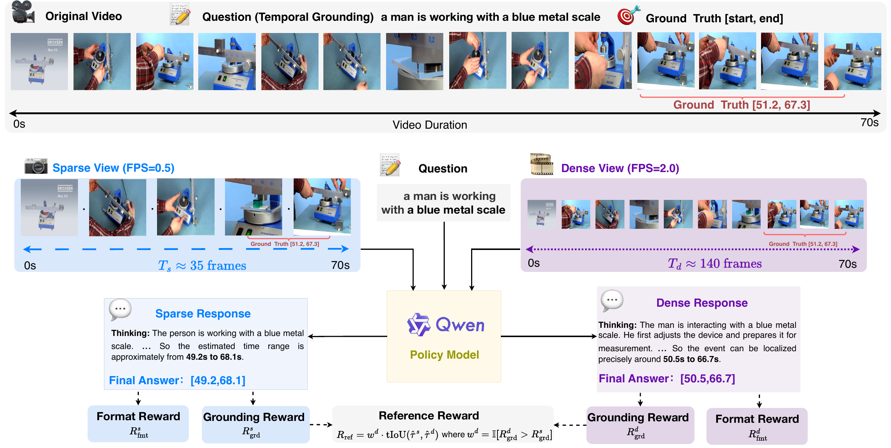
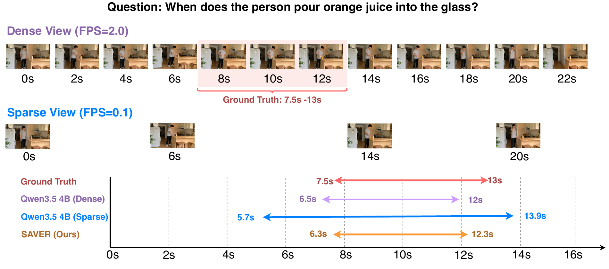

Pair the views
Sample dense and sparse frame sequences from the same video. Feed both, with the same grounding instruction, into a shared policy.
SAVER
Reinforcing Sparse Video Reasoning
from Dense References
University of Amsterdam / † Corresponding author
Learn from dense video. Reason with sparse frames.
benchmarks
model sizes
fewer video-QA frames
139 → 38 average frames for video QA · 2.0 → 0.1 fps
Dense and sparse views share one policy. The stronger dense prediction guides its sparse counterpart.

Sample dense and sparse frame sequences from the same video. Feed both, with the same grounding instruction, into a shared policy.
Reward valid outputs and accurate temporal intervals. Align the sparse interval with the dense interval only when the dense grounding reward is higher.
Use a prescribed low frame rate at inference. Grounding post-training transfers to video question answering.
Video-language models commonly assume that more temporal observations lead to more reliable reasoning. We question this assumption and argue that the key challenge is not merely processing more video frames efficiently, but learning to reason reliably under limited temporal evidence. We propose SAVER, a dense-to-sparse post-training framework that uses dense video views as training-time references for sparse-frame inference. During reinforcement post-training, paired dense and sparse views are optimized with grounding rewards and a reliability-gated reference reward, encouraging sparse view predictions to preserve task-relevant temporal evidence. Across three temporal grounding benchmarks and six video question-answering benchmarks, SAVER consistently improves performance across frame budgets. In particular, SAVER can match or surpass dense-frame Qwen3.5 baselines while using substantially fewer frames. These results show that temporal grounding can serve as an effective evidence-localization proxy for learning sparse video reasoning that transfers to broader video understanding tasks.
SAVER and Qwen3.5, compared at the same model size and frame rate.
Qwen3.5 SAVER
Loading benchmark results…
Macro-averages over 3 grounding and 6 video-QA benchmarks. Individual results vary by task.
At 0.1 fps, SAVER-2B reaches 50.8% average video-QA accuracy, close to Qwen3.5-2B at 2.0 fps (51.0%), while using 38 rather than 139 frames on average.
TABLE 8 / INFERENCE COST
Qwen3.5-2B · 2.0 → 0.1 fps
visual tokens
33,113 → 4,386peak GPU memory
11.30 → 5.73 GiBend-to-end latency
6.58 → 2.40 s| Benchmark | Visual tokens | Peak memory (GiB) | E2E latency (s) |
|---|---|---|---|
| Video-MME | 69,750 → 3,060 | 18.72 → 4.80 | 10.03 → 1.41 |
| LongVideoBench | 92,160 → 13,950 | 20.65 → 7.89 | 16.59 → 4.31 |
| VideoMMMU | 89,160 → 19,137 | 21.54 → 12.99 | 20.62 → 8.02 |
| Average · 9 benchmarks | 33,113 → 4,386 | 11.30 → 5.73 | 6.58 → 2.40 |
Base-model profiling on one H100 (96 GB), BF16, batch size 1; not a SAVER-specific speed measurement.
In this qualitative example, sparse Qwen3.5 predicts a broad interval. SAVER produces a tighter interval closer to the ground truth.

What remains challenging? Sparse frames can miss a key event entirely or confuse repeated actions. SAVER improves aggregate performance but cannot recover visual evidence that was never observed.
Qwen3.5-based checkpoints, available on Hugging Face.
MODEL_PATH=lmsdss/SAVER-2B FPS=0.1 NPROC_PER_NODE=1 \
bash scripts/eval/evaluate.sh@misc{sun2026less,
title = {Less from More: Reinforcing Sparse Video
Reasoning from Dense References},
author = {Sun, Wenfang and Du, Yingjun
and Snoek, Cees G. M.},
year = {2026},
url = {https://wenfangsun.cn/SAVER/}
}